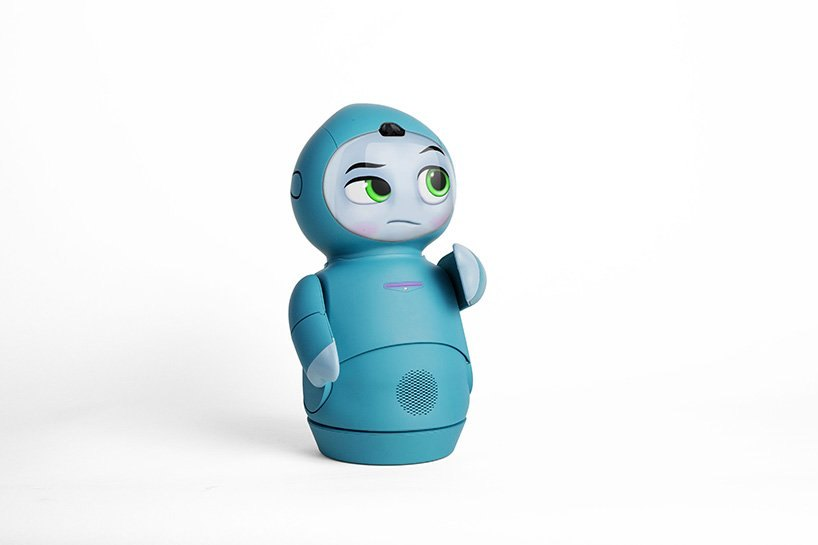
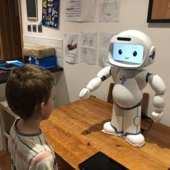
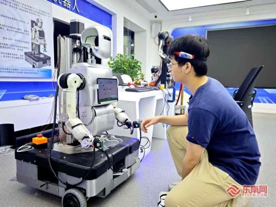
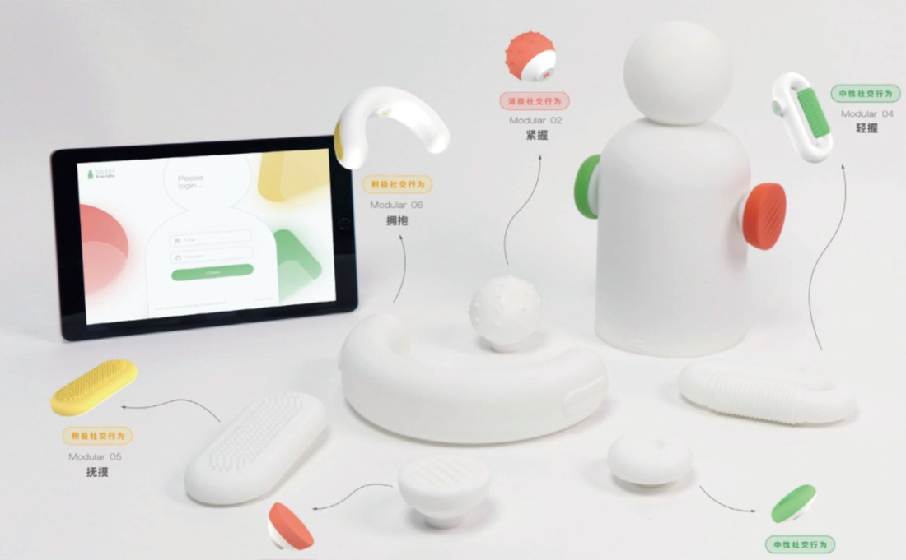
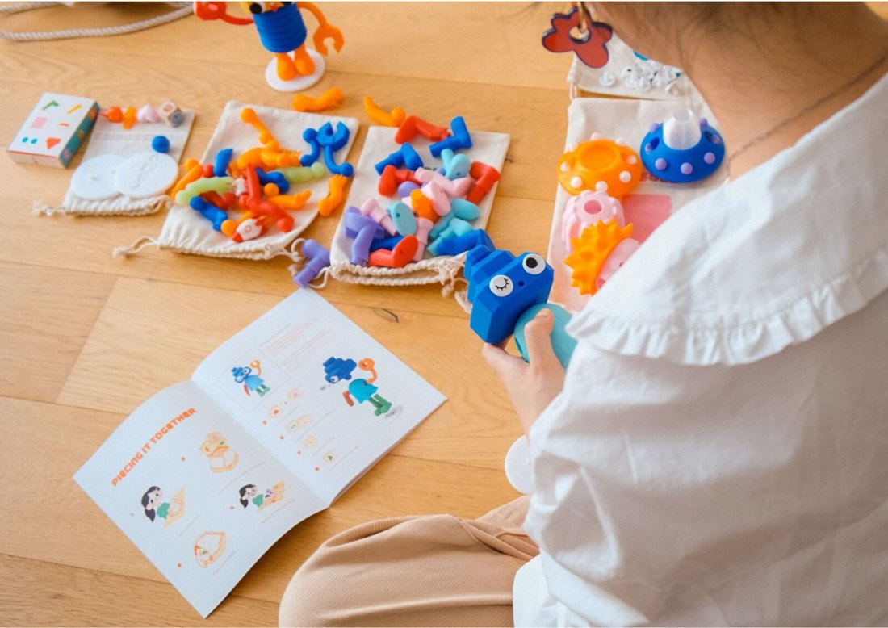
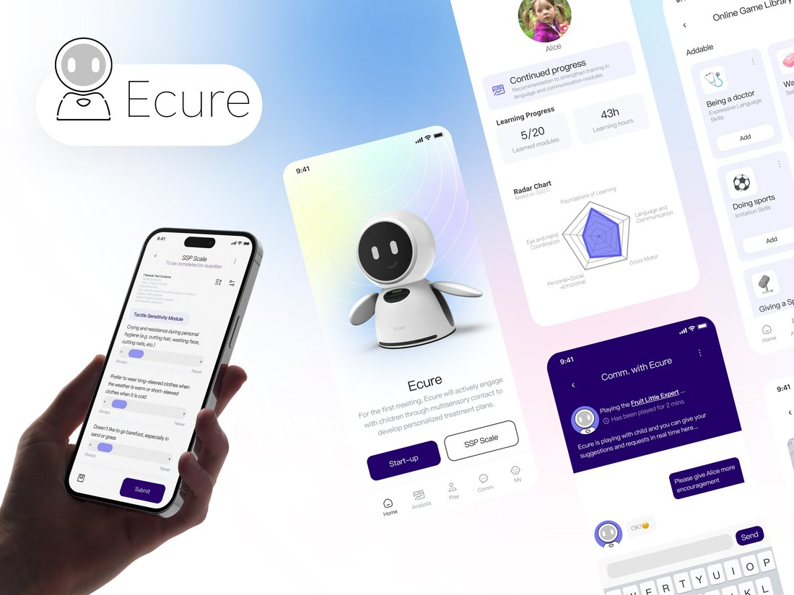
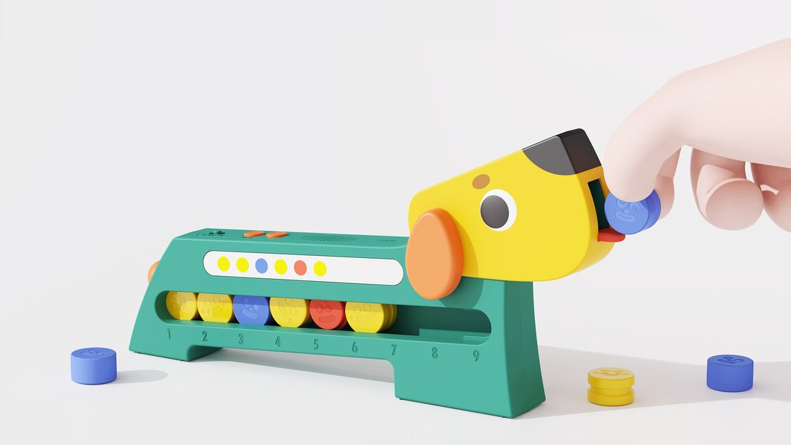

55–70岁目标人群年龄区间
3类高血压 / 冠心病 / 糖尿病
4项已识别的核心痛点
2端车载端 + 家属小程序
01.1 — 人群画像
55–70 岁、患高血压 / 冠心病 / 糖尿病等基础慢病的自驾群体，日常用于就医、采购、接送亲属；子女多数时间不在身边，存在出行看护空白。
这群人不是「需要被劝停开车的人」。自驾对他们意味着按时复诊、买到想吃的菜、接孙子放学——是生活自主性本身。任何以「限制驾驶」为前提的方案，都会在第一步被用户拒绝。设计的起点因此不是监管，而是在保留方向盘的前提下降低风险。
01.2 — 场景任务分解
- 危急时刻，多步操作直接失效突发状况下无法完成「解锁手机 → 拨号 → 说清位置与病史」，家属也拿不到实时定位与体征。
- 单一面部识别会把发病当成犯困低头、面色痛苦被判定为疲劳驾驶，只弹「请休息」，后面没有健康干预链路。
- 驾驶中的体征波动不留痕复诊只有静态指标，缺少「在路上的那一段」作为参考。
- 家属侧是长期的看护焦虑不是一次事件，而是无法关闭的、持续的担心。
FIG.01痛点场景推演 · 任何「打开 App → 找到按钮」的路径此刻都不成立
未被验证的部分：本项目为课程阶段方案，未开展真实用户访谈与样本统计。人群画像与痛点来自公开资料与场景推演，不宣称具备实证研究强度。
PROPOSITION
把「发病」到「求助」之间的所有中间步骤，交给车——驾驶者只需要保留一个动作，甚至不需要动作。
P.01危急时刻只保留一个动作
≥ 36 号大字、黑底白字、绿色健康标识；仅保留 1 个虚拟设置键，其余全部语音操作。
P.02分级干预，不打断正常驾驶
轻度仅语音提示；中度弹窗并推荐就近医疗点；重度才联动车辆避险与求助。
P.03双模态融合，分开疲劳与发病
视觉（面部姿态）+ 体征（心率 / 血氧 / 心电 / 坐姿）交叉判定。
P.04信息一次同步，不让用户复述
蓝牙单次触发完成：语音安抚、家属推送定位 + 体征 + 病史、同步急救点、车辆解锁车门。
02.2 — 三层状态模型
L1 正常态左侧 1/3 显示心率、血氧，黑底白字 + 绿色健康标识；右侧 2/3 为导航。界面安静，不制造焦虑。
L2 预警态顶部高亮黄色弹窗，大字显示预警原因与建议，语音同步播报，支持语音应答「是 / 否」导航。
L3 紧急态全屏红色，白色大字「救援已出发」与倒计时；无多余按钮，循环语音引导，避免慌乱误触。
02.3 — 系统构成
- A · 车载端｜驾驶主操作实时监测 / 分级预警 / 一键求助 / 联动救援。信息按「一眼判读」组织，其余交给语音。
- B · 硬件｜后装不改车方向盘集成监测模组 + 座椅体征监测垫。用户自行 5 分钟安装，不依赖 4S 店。
- C · 家属端｜远程看护实时位置地图、健康状态大卡片、一键呼叫车主 / 急救、出行健康档案与告警记录。
03.1 — 交互流程
FIG.02主链路：采集 → 判定 → 分级 → 干预 → 归档
03.2 — 车载端三态
03-A正常态 · 73 bpm / 98 %
03-B预警态 · YES / NO 语音应答
03-C紧急态 · Rescue En Route
03.3 — 关于紧急态
紧急态为什么删掉了所有按钮
慌乱状态下，人的点击精度会显著下降，屏幕上任何可点的东西都变成风险。因此只保留三样：一句已经发生的结论、一个正在走的数字、一条循环的语音引导。用户此刻不需要做决定，只需要被带着走。
03.4 — 家属端
更少的判断，而不是更多信息
首页只回答三个问题：他在哪、他现在怎么样、我要不要动手。其余信息收进档案页，避免把看护焦虑渲染成持续的通知流。
03-D首页 · 位置 / 体征 / 两个大按钮
03-E出行健康档案
03-F告警记录
03.5 — 两件后装硬件
03-G集成监测模组 · 摄像头 + 求助键 + 蓝牙屏
03-H爆炸图 · 外壳 / 陶瓷基板 / 传感器阵列
03-I座椅体征监测垫 · 柔性 ECG 阵列
03-J安装指南 · 5 分钟自行完成
03-K方向盘实装
03-L座椅一体感
03-M壳体配色方案 B（青）
形态上的取舍：把它做得像汽车配件，而不是医疗器械。米色与哑光灰靠近原车内饰；一旦看起来像医院设备，用户会把它理解成「我病得很重」的证据，从而拒绝使用。
V-01尊重自主出行的权利
包容性设计的落地：慢病老人不需要因为疾病放弃自驾，保留生活的自主性与尊严。
V-02缓解家庭看护焦虑
填补「老人独自驾车、子女远程看护」的场景空白，突发状况第一时间响应。
V-03提升急救救援效率
前置精准定位与健康数据，减少急救沟通成本，缩短响应时间。
V-04低成本、易落地
模块化适配绝大多数家用车型，可单独更换，支持 OTA，蓝牙替代额外通信模组。
04.2 — 局限与下一步（未完成的部分）
- 没有真实用户测试老年群体的触控热区、字号可读性、语音唤醒词的可懂度，都还是设计假设。
- 误报率尚未验证双模态融合目前是判定逻辑的实现，阈值与训练数据未建立；「不误报」比「能报警」更难。
- 隐私与医疗合规连续体征与位置数据的存储周期、共享边界，需要进入真实的合规流程。
- 与急救平台的接口真正的联动救援需要点对点接口而非短信推送，涉及跨机构协作。
TAKEAWAY
在危急场景里，好设计不是让信息更丰富，而是让该发生的事不需要人来做。
1/100WHO 估算全球儿童 ASD 比例
7‰我国 2017–2023 患病率
1300万+我国孤独症患者规模
0–6岁公认的最佳干预期
21.57%AI 家庭干预 12 个月社交商提升
46.49%发育年龄较对照组提前
01.1 — 疾病负担与干预窗口
2000 年，美国 CDC 建立自闭症与发育障碍监测（ADDM）网络。截至 2022 年 ADDM 数据，ASD 患病率已基本确认，且发病率持续上升；WHO 估算全球每 100 名儿童中约有 1 名患有孤独症谱系障碍。
国内方面，研究显示 2017—2023 年我国孤独症患病率约为 7‰，患者总数超过 1300 万。而 0–6 岁是最佳干预期。
01.2 — 有效性证据
JMIR 一项为期 12 个月的纵向观察，对 43 名 2 至 18 岁儿童评估：AI 辅助家庭干预 12 个月后，社交商平均提升 21.57%，发育年龄较对照组提前 46.49%。
01.3 — 玩具与治疗玩具之间没有鸿沟
重庆师范大学孔祥勋的研究指出：自闭症玩具与普通玩具并没有不可逾越的鸿沟——当普通玩具满足了自闭症的某方面特殊需求时，它也可以成为自闭症玩具。这条结论直接解锁了本项目的形态策略：不必发明一个新品类，可以把干预叠加在儿童本来就会喜欢的动物形态上。
FIG.01患病率分布 · 区域资源不均是干预可及性的关键变量
01.4 — 国内外竞品
PARO 日本仿生海豹，临床验证。约 6 万元，功能单一，不可自主移动。

Moxie 美国GPT-4 驱动，课程标准化。偏硬科技感，续航约 4 小时。
Tombot 美国仿真金毛，触感极佳。纯陪伴，无专业干预。

QTrobot 卢森堡专为孤独症设计。外观生硬、体积大、价格高。

福小智 F1-D 中国脑机接口 + 眼动追踪。门槛高、配套多。
01.5 — 顶尖设计获奖作品

TOUCH friends 红点至尊奖模块化触觉交互，彻底无屏。借鉴：模块化 + 多感官。

Augi 好设计金奖AAC 情绪表达积木。借鉴：辅助沟通与社交融合。

ECURE iF 金奖可更换毛绒外套。借鉴：可更换外观增强情感连接。

斑斑互动糖豆狗 红星金奖游戏化干预、价格亲民。借鉴：游戏化 + 高性价比。
横向读下来的规律：往「更像人、更智能、更专业」走，价格与感官压迫同步上升；往「更像毛绒玩具」走，情绪安抚有了，干预能力却消失。中间的空白——既被孩子接受、又具备干预能力、还买得起——正是本项目要占的位置。
PROPOSITION
把专业干预藏进一只孩子愿意主动抱住的动物里——让治疗看起来像玩耍，让记录发生在被抱着的时候。
C-01临床有效性
必须能提供真实的干预动作与行为记录，而不是只会撒娇的玩偶。
C-02儿童可接受度
形态与声光不能触发感官防御；不能要求孩子先学会「使用」它。
C-03家庭可负担性
价格与维护成本要落在普通家庭的区间内，否则前两条没有意义。
02.2 — 四条人因工程约束（可量纲的设计决定）
HF.01尺寸与比例
高 28 cm 适配坐姿拥抱高度；宽 20 cm 符合 3–6 岁臂展；整机 ≤ 3 kg，儿童可自主抱起。
HF.02感官适配
哑光食品级 ABS，避免强光反射；暖黄柔光 LED，无频闪、可无级调光；音量上限 60 dB。
HF.03交互设计
3 处触摸触点位于最易触碰部位；移动速度 ≤ 1.5 km/h；仅 3 种基础表情。
HF.04安全防护
圆角 ≥ 5 mm；可拆卸件 > 3 cm；工作电压 ≤ 24 V + 磁吸接口。
02.3 — 形态选择：为什么是柯基
动物形态承担了三件抽象不了的事：提供可被理解的情绪线索、提供不具威胁性的尺度、提供儿童已有的经验模型。在犬、兔、熊三个方向里，柯基的几何最合适——短粗圆润的肢体天然消除「细长结构会夹人」的联想；大耳与大头身比直接对应「幼崽」；低饱和米白与浅棕远比高饱和色安静。
02.4 — 三位一体
- 陪伴无条件接纳、永不疲倦。以抚触与眼神回应为主，不要求孩子正确操作。
- 治疗以游戏化任务承载社交与情绪训练；记录行为数据，生成个性化报告。
- 监测互动频次、触摸偏好、情绪状态、任务完成度，交给家长端与治疗师。
03.1 — 三个草案的对比
| 草案 | 尺寸规格 | 外观特点 | 交互体验 |
|---|
| 卡通柯基主推 | 28 × 35 × 20 cm | 短粗圆润，软质硅胶耳尾，米白 + 浅棕低饱和 | 头 / 腹 / 背 3 处感应区，开心、好奇、撒娇 3 种表情 |
| 卡通兔子 | 与柯基一致 | 可折叠摆动的长软硅胶耳朵，纯白 + 浅灰 | 增加「抚摸耳朵」专属交互 |
| 卡通小熊 | 30 × 32 × 22 cm | 圆胖憨厚，可拆卸毛绒外套，深棕 + 米黄 | 「熊掌击掌」+ 欢快音效 |
03.2 — 三视白模校核
03-A正面 · 高 28 / 宽 20 cm
03-B侧面 · 纵深 35 cm
03-C俯视 · ≤ 3 kg，背部磁吸充电
03.3 — 最终方案规格
| 高度 | 28 cm · 适配坐姿拥抱高度 |
| 宽度 | 20 cm · 符合 3–6 岁臂展 |
| 纵深 | 35 cm · 兼顾内部空间与收纳 |
| 重量 | ≤ 3 kg · 儿童可自主抱起 |
| 主体 | 哑光食品级 ABS |
| 眼睛 | 暖黄柔光 LED · 开心 / 好奇 / 困倦 |
| 触摸 | 头 / 腹 / 背 3 处 |
| 速度 | ≤ 1.5 km/h |
| 音量 | ≤ 60 dB |
| 电压 | ≤ 24 V + 磁吸接口 |
03-D最终渲染 · 圆形凹陷是隐藏的触摸感应区
03.4 — 使用场景
03-E家庭 · 语言与社交训练
03-F康复机构 · 治疗师辅助干预
03-G户外 · 探索引导
V-01对儿童
无条件接纳、永不疲倦的伙伴，在寓教于乐的游戏中提升社交互动与情感沟通能力。
V-02对家长
专业的家庭干预辅助工具，缓解经济与心理照护压力，记录每个成长片段。
V-03对治疗师
高效的数据记录与分析工具，减轻文书负担，支持个性化、精准的干预方案。
VISION
每一个自闭症儿童都是一颗星星。希望用科技打破障碍，让每个孩子都拥有一个温暖、智能的童年伙伴。
04.2 — 局限与下一步
- 没有儿童可用性测试28 cm 与 20 cm 是从人体尺寸推出来的数字，还没有被真实儿童的手臂验证过。
- 三种表情是判断，不是实证「更少表情降低认知负担」成立，但 ASD 儿童的情绪识别边界缺少实验支持。
- 卫生与耐久软硅胶耳尾、毛绒层的清洗频次与寿命、内部防水等级，尚未进入结构验证。
- 数据边界行为数据给家长看多少、给治疗师看多少，涉及儿童隐私与监护权。
04.3 — 设计之外的三条收获
- 先定约束，再定形态60 分贝、5 mm 圆角、3 cm 零件、1.5 km/h——这些数字比造型更早出现，也更能决定造型。
- 减法比加法难删掉屏幕、表情、触控点，每一次删减都在削弱说服力，但也都在降低孩子的门槛。
- 形态本身就是治疗手段柔软、圆润、低饱和、类幼崽——不是审美偏好，是让儿童放下防御的临床条件。